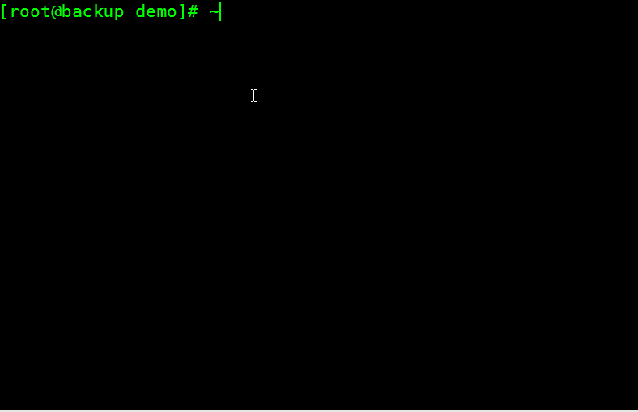
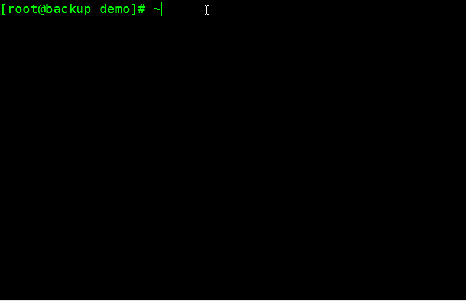
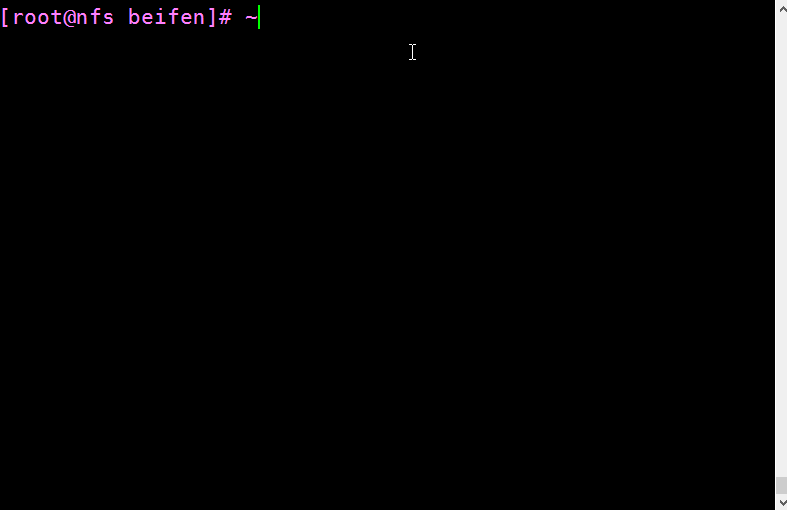
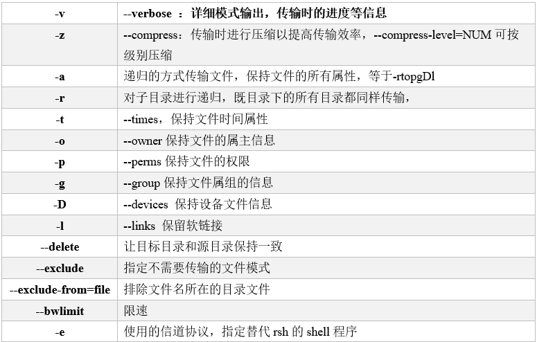

rsync的版本
[root@backup ~]# cat /etc/redhat-release
CentOS release 6.9 (Final)
[root@backup ~]# uname -r
2.6.32-696.el6.x86_64
[root@backup ~]# rpm -qa|grep rsync
rsync-3.0.6-12.el6.x86_64
rsync的三种工作模式
rsync的本地工作模式
在本地rsync相当于cp命令
mkdir /demo
touch /demo/test.txt
rsync /demo/test.tx /tmp/testrsync.txt
cp /demo/test.txt /tmp/testcp.txt
可以看出rsync在本地和cp命令的没有什么差别

rsync通过管道ssh传输数据
rsync backup 172.16.1.31:/tmp

rsync传输目录时的注意
rsync需要注意的参数–delte
--delte需要特殊的注意，因为一个不小心就可能造成非常严重的后果所以需要特别注意。

操作步骤：
【nfs】
touch {1..10}.log
【backup】
rsync -avz --delete /demo/ 172.16.1.31:/beifen
参数说明：
--delete:这个参数可以理解为强制使rsync的目标端和源端的内容一致。非常危险。一不小心就会清空整个备份。也可以说是你的本地目录是什么样子就会同步成什么样子.
rsync的Daemon模式
rsync的daemon模式是一个服务端和客户端的结构。
rsync的参数列表

rsync的推送（pull）和拉取（push）
推送的意思是将数据从本地传输到远端
rsync -av /demo 172.16.1.31:/beifen
拉取的意思是将数据从远端传输到本地
rsync -av 172.16.1.31:/beifen /demo